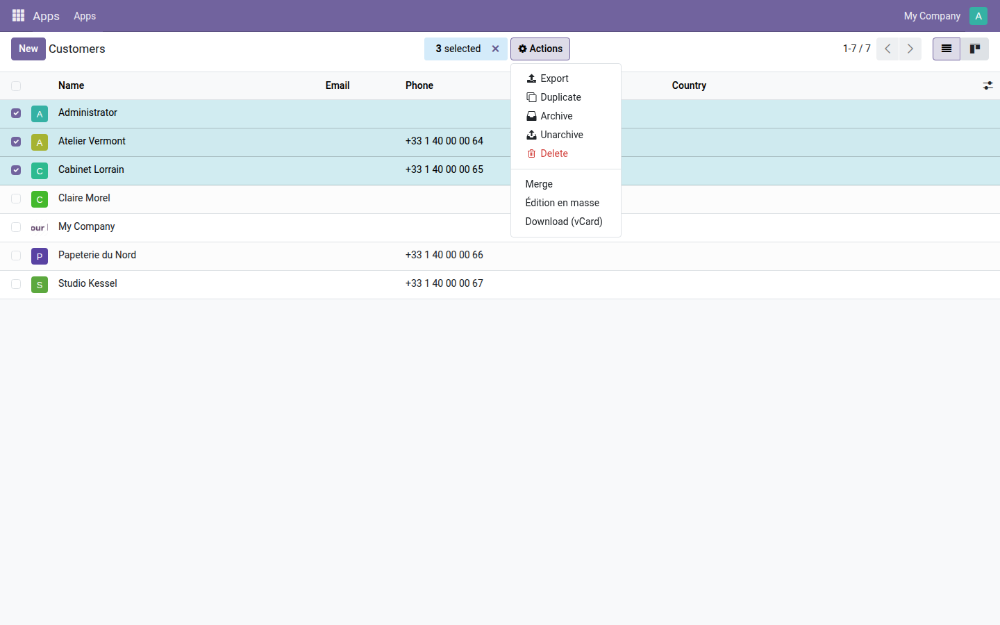
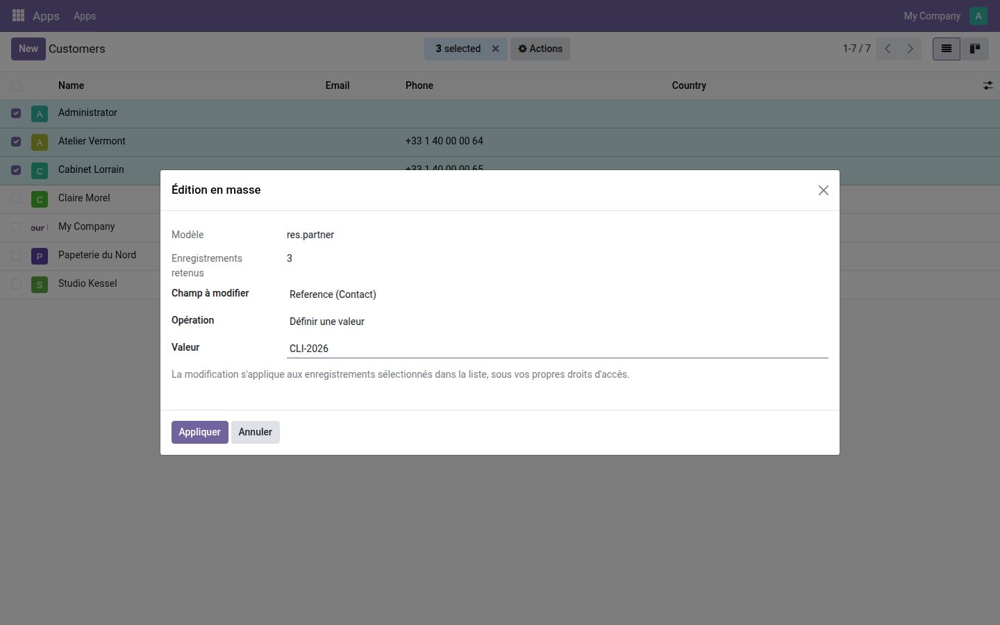
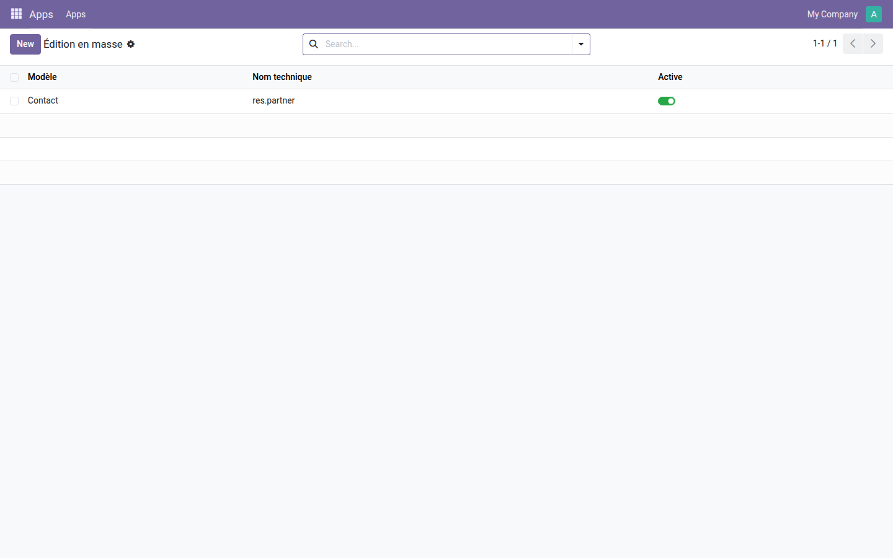

Modifiez un champ sur toute une sélection depuis la vue liste, sans ouvrir chaque fiche.
Corriger la même erreur sur deux cents contacts, poser un vendeur sur tout un lot de commandes, vider un champ devenu obsolète : Odoo demande d'ouvrir chaque fiche, une par une. La seule alternative native est l'export, la retouche dans un tableur, puis le réimport — trois occasions de se tromper pour une correction d'une seconde.
sudo().Trois contacts cochés : « Édition en masse » prend place parmi les actions natives d'Odoo (Export, Dupliquer, Archiver, Supprimer), sans rien déplacer.

Le modèle et le nombre d'enregistrements retenus sont rappelés en clair ; le champ se choisit dans la liste des champs inscriptibles du modèle, ici « Reference » sur trois contacts.

Un administrateur ajoute ou retire un modèle d'une ligne. Le désactiver retire l'entrée du menu Actions sans perdre la configuration.

Si votre besoin porte moins sur la saisie que sur le contrôle de ce que chacun peut voir et modifier, la gamme OdooSkills compte une quinzaine de modules de cloisonnement — par équipe commerciale, par département, par projet, par journal comptable, par entrepôt. Catalogue complet : apps.odooskills.com.
Licence LGPL-3 — compatible Odoo 19.0 Community et Enterprise. Support : support@odooskills.com.